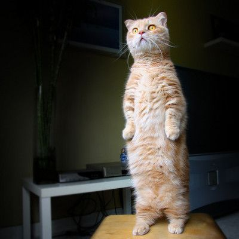

The Book of Sand
Jorge Luis Borges
Daft Punk - Around the World Lyrics | Genius Lyrics [Refrain]
Around the world, around the world Around the world, around the world Around the world, around the world Around the world, around the world Around the world, around the world Around the world, around the world Around the world, around the world Around the world, around the world Around the world, around the world Around the world, around the world Around the world, around the world Around the world, around the world Around the world, around the world Around the world, around the world Around the world, around the world Around the world, around the world Around the world, around the world Around the world, around the world Around the world, around the world Around the world, around the world Around the world, around the world Around the world, around the world Around the world, around the world Around the world, around the world Around the world, around the world Around the world, around the world Around the world, around the world Around the world, around the world Around the world, around the world Around the world, around the world Around the world, around the world Around the world, around the world Around the world, around the world Around the world, around the world Around the world, around the world Around the world, around the world Around the world, around the world Around the world, around the world Around the world, around the world Around the world, around the world Around the world, around the world Around the world, around the world Around the world, around the world Around the world, around the world Around the world, around the world Around the world, around the world Around the world, around the world Around the world, around the world Around the world, around the world Around the world, around the world Around the world, around the world Around the world, around the world Around the world, around the world Around the world, around the world Around the world, around the world Around the world, around the world Around the world, around the world Around the world, around the world Around the world, around the world Around the world, around the world Around the world, around the world Around the world, around the world Around the world, around the world Around the world, around the world Around the world, around the world Around the world, around the world Around the world, around the world Around the world, around the world Around the world, around the world Around the world, around the world Around the world, around the world Around the world, around the world
Then, as if he were thinking aloud, he said, "If space is infinite, we may be at any point in space. If time is infinite, we may be at any point in time."
His speculations irritated me. "You are religious, no doubt?" I asked him.
"Yes, I'm a Presbyterian. My conscience is clear. I am reasonably sure of not having cheated the native when I gave him the Word of God in exchange for his devilish book."
I assured him that he had nothing to reproach himself for, and I asked if he were just passing through this part of the world. He replied that he planned to return to his country in a few days. It was then that I learned that he was a Scot from the Orkney Islands. I told him I had a great personal affection for Scotland, through my love of Stevenson and Hume.
"You mean Stevenson and Robbie Burns," he corrected.
While we spoke, I kept exploring the infinite book. With feigned indifference, I asked, "Do you intend to offer this curiosity to the British Museum?"
"No. I'm offering it to you," he said, and he stipulated a rather high sum for the book.
I answered, in all truthfulness, that such a sum was out of my reach, and I began thinking. After a minute or two, I came up with a scheme.
"I propose a swap, " I said. "You got this book for a handful of rupees and a copy of the Bible. I'll offer you the amount of my pension check, which I've just collected, and my black-letter Wiclif Bible. I inherited it from my ancestors."
"A black-letter Wiclif!" he murmured.
I went to my bedroom and brought him the money and the book. He turned the leaves and studied the title page with all the fervor of a true bibliophile.
"It's a deal," he said.
It amazed me that he did not haggle. Only later was I to realize that he had entered my house with his mind made up to sell the book. Without counting the money, he put it away.
We talked about India, about Orkney, and about the Norwegian jarls who once ruled it. It was night when the man left. I have not seen him again, nor do I know his name.
I thought of keeping the Book of Sand in the space left on the shelf by the Wiclif, but in the end I decided to hide it behind the volumes of a broken set of The Thousand and One Nights. I went to bed and did not sleep. At three or four in the morning, I turned on the light. I got down the impossible book and leafed through its pages. On one of them I saw engraved a mask. The upper corner of the page carried a number, which I no longer recall, elevated to the ninth power.
I showed no one my treasure. To the luck of owning it was added the fear of having it stolen, and then the misgiving that it might not truly be infinite. These twin preoccupations intensified my old misanthropy. I had only a few friends left; I now stopped seeing even them. A prisoner of the book, I almost never went out anymore. After studying its frayed spine and covers with a magnifying glass, I rejected the possibility of a contrivance of any sort. The small illustrations, I verified, came two thousand pages apart. I set about listing them alphabetically in a notebook, which I was not long in filling up. Never once was an illustration repeated. At night, in the meager intervals my insomnia granted, I dreamed of the book.
Summer came and went, and I realized that the book was monstrous. What good did it do me to think that I, who looked upon the volume with my eyes, who held it in my hands, was any less monstrous? I felt that the book was a nightmarish object, an obscene thing that affronted and tainted reality itself.
I thought of fire, but I feared that the burning of an infinite book might likewise prove infinite and suffocate the planet with smoke. Somewhere I recalled reading that the best place to hide a leaf is in a forest. Before retirement, I worked on Mexico Street, at the Argentine National Library, which contains nine hundred thousand volumes. I knew that to the right of the entrance a curved staircase leads down into the basement, where books and maps and periodicals are kept. One day I went there and, slipping past a member of the staff and trying not to notice at what height or distance from the door, I lost the Book of Sand on one of the basement's musty shelves.